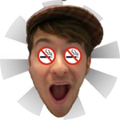
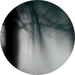

A couple of friends who want to make art and help out the community along the way.
Matt Ratleph is one of the co-founders of Umberlas and he lives in Wheaton, IL. He makes ambient and downtempo with a glitchy flavor. He also collaborates with Billy Battle for the Umberlas Community Project releases. Follow him on Twitter or Bandcamp.
Billy Battle is one of the co-founders of Umberlas and he lives in Oswego, IL. He makes experimental acoustic music. He also collaborates with Matt Ratleph for the Umberlas Community Project releases. Follow him on Twitter, his website, MySpace or Bandcamp.
We release an album and put on a live show or two every summer.
UCP 1: Synergy. The first Umberlas Community Project release, containing the first track Matt Ratleph and Billy Battle ever collaborated on, as well as some previously unreleased tracks from both Matt and Billy. Download the album.
We try to make Christmas happen for a handful of families every winter.
Sometimes we take Christmas for granted. We assume that each family is able to celebrate with good food and fun presents. Not every family is that fortunate, and so we hope to break down a couple barriers for them through providing food and gifts.
The genesis of Umberlas can most likely be traced back to sometime in 2005. Matt Ratleph and Billy Battle were both attending Joliet Junior College, each taking the same computer art and graphic design courses. Billy was working on his second Trato Stat album and Matt was helping out in small ways. It was for this album that Billy decided to do a bit more than the usual "sell CDs, play shows, make money" routine. He decided to use the funds he was generating to do a service project.
Working with a local Jaycee's chapter, Billy decided to help out some financially-struggling families over the Christmas season. Armed with toys for the kids and much needed household items for the parents, he visited some families and gave them some unexpected Christmas presents. Billy tells it best, but there's something about watching kids play with toys they never thought they'd have and watching parents break down and cry over the gift of a vacuum cleaner that does something to your heart. He knew he wanted to do more, and Matt was on board.
Umberlas exists to recreate those events Billy and Matt participated in way back in 2005, only on a larger scale. Umberlas is artists doing what they do, creating, but with a purpose beyond just the content. Umberlas is collaboration motivated by compassion. Umberlas is about actually engaging with our communities rather than being passive bystanders. Umberlas is for the creator and the consumer; the artist and the fan. Umberlas is for people that want to see some real change come to their neighborhoods. Umberlas is about using art as a means to meet real physical needs, and hopefully needs beyond that. Umberlas is a community.